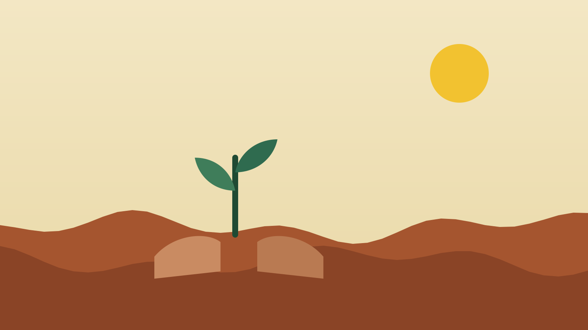

Meta da temporada 2026/2027
0% da meta

Quem somos
O cerrado é uma floresta de cabeça para baixo.
A maior parte das plantas do cerrado vive debaixo da terra. As raízes descem metros em busca de água e guardam carbono no solo, mesmo quando a seca deixa tudo dourado por cima.
A Rede Reflorestar nasceu em Brasília para juntar quem quer compensar suas emissões com quem sabe plantar. As mudas vêm do nosso viveiro parceiro, o Viveiro Brasília Delivery, no Jardim Botânico, e nós acompanhamos cada uma por 2 anos, da cova até ela andar sozinha.
Ver o que fazemosO que fazemos
Do viveiro à área plantada, com relatório para você acompanhar.
Plantio
Cova adubada, muda nativa e proteção contra formigas e capim.
Manutenção
Rega na seca, coroamento e replantio das mudas que não vingarem.
Educação
Oficinas e mutirões em escolas e condomínios sobre o cerrado.
Empresas
Compensação de carbono com relatório e selo para ações de ESG.
Espécies que plantamos
Handroanthus serratifolius
Ipê-amarelo
Floresce no auge da seca, de julho a setembro, quando perde as folhas e fica todo amarelo.
FloraçãoCaryocar brasiliense
Pequizeiro
Símbolo do cerrado. O fruto amadurece no período das chuvas, de novembro a fevereiro.
FrutoDipteryx alata
Baru
Dá a castanha de baru, nutritiva e cada vez mais procurada. Ótima sombra para o gado.
FrutoMauritia flexuosa
Buriti
Palmeira das veredas. Onde há buriti, há água: protege nascentes e margens de córregos.
Beira d'águaEugenia dysenterica
Cagaita
Flores brancas no fim da seca e frutos ácidos e refrescantes, muito usados em sucos.
Fruto e floraçãoHymenaea stigonocarpa
Jatobá-do-cerrado
Árvore resistente, de madeira dura. A polpa do fruto vira uma farinha comestível.
FrutoCalculadora de pegada
Quantas mudas a sua casa precisa?
Use números de um mês comum. O consumo de energia está na conta de luz.
0,0 t de CO₂ por ano · 0,0 t por pessoa
Estimativa simplificada, para fins educativos.
Nosso viveiro
Onde cada muda começa.
Sementes colhidas no próprio cerrado, mudas criadas com cuidado e plantio só na época das chuvas.
Adote mudas todo mês
Cada muda inclui plantio, cova adubada, rega na seca e 2 anos de acompanhamento. Quanto maior o plano, menor o preço por muda.
Broto
1 muda/mês
R$ 39,90/mês
R$ 39,90 por muda
- Certificado de adoção
- Relatório anual do plantio
Copa
3 mudas/mês
R$ 99,90/mês
R$ 33,30 por muda
- Foto e localização de cada muda
- Relatório a cada 3 meses
- Convite para os mutirões
Mata
8 mudas/mês
R$ 239,90/mês
R$ 29,99 por muda
- Tudo do plano Copa
- Selo para empresas
- Placa com seu nome na área
Próximos mutirões
Leve chapéu, água e protetor solar. As ferramentas e as mudas são por nossa conta.
| Data | Local | Atividade | Vagas |
|---|---|---|---|
| 28/11/2026 | Jardim Botânico - DF | Plantio de ipês e baru | 40 |
| 12/12/2026 | Sobradinho - DF | Recuperação de nascente com buritis | 25 |
| 16/01/2027 | Planaltina - DF | Plantio de frutíferas nativas | 50 |
Bora plantar?
Mande sua mensagem para adotar mudas, participar de um mutirão ou levar o projeto para a sua empresa ou escola.
- (61) 98664-9709
- viveirobrasiliadf@gmail.com
- Segunda a sexta, das 9h às 17h
Perguntas frequentes
Viveiro parceiro
Viveiro Brasília Delivery
É de lá que saem as mudas nativas da Rede Reflorestar, além de sementes, substratos, hortaliças e plantas ornamentais.
- Condomínio Ville de Montagne, Quadra 15, Jardim Botânico, Brasília - DF, CEP 71680-357
- (61) 98664-9709
- viveirobrasiliadf@gmail.com
- Retirada com horário agendado, de segunda a sexta, das 9h às 17h
- Entrega em Brasília, com taxa conforme a região